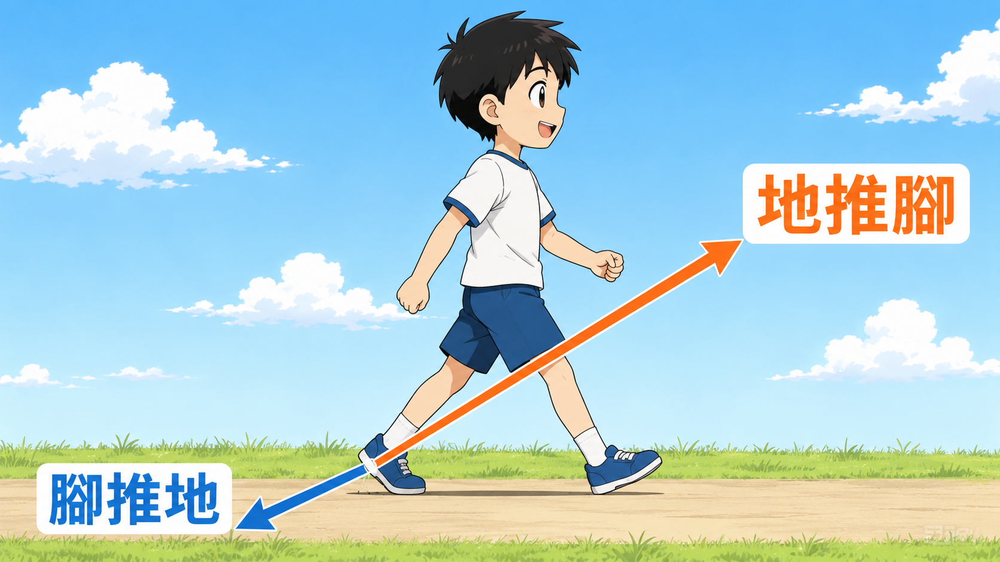
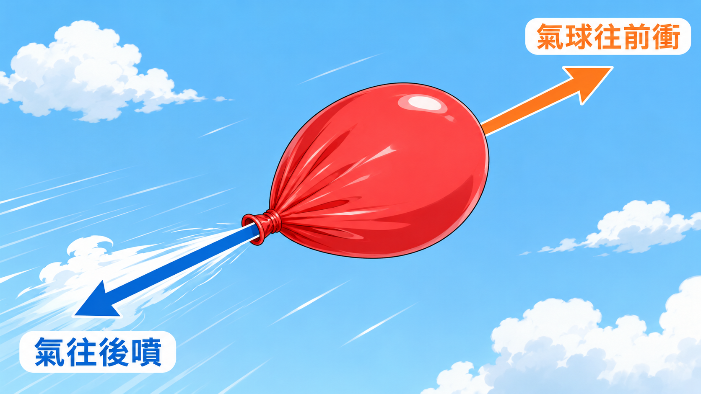

例 1
🚶 走路

你怎麼往前走？腳往後蹬，地把你往前推。現在站起來走兩步，感受看看腳底跟地的對話。
上一堂看了它能做什麼。這一堂要回答一個更基本的問題：它到底為什麼能飛上去？
這堂課會用到自然課的作用力與反作用力（牛頓第三運動定律）。沒學到也沒關係，下面五個例子看完就懂。

你怎麼往前走？腳往後蹬，地把你往前推。現在站起來走兩步，感受看看腳底跟地的對話。

吹一顆氣球，鬆開——它會亂飛！氣往後噴，氣球往前衝。氣球噴出來的東西是「空氣」，跟螺旋槳推的東西一樣。
自然課做過的水火箭，水往下噴，火箭往上衝。跟氣球一模一樣的道理，只是噴的東西換成水。
火箭引擎把燃燒後的高溫氣體往下噴，火箭就被推往上方。極端版的反作用力——同樣的原理可以把人送上太空。
終於連回來了：無人機螺旋槳高速轉動，把空氣用力往下推→ 反作用力把無人機往上抬。原理跟前面四個一樣，只是它做得非常快、非常穩。
不管推水、推氣、還是推空氣，只要把東西往一個方向用力推，自己就會被推往反方向——這就是反作用力。無人機只是把這件事做得很快、很穩。
中場休息一下 ☕
下一頁來看：同樣是反作用力，飛機、直升機、四軸怎麼長得完全不一樣？